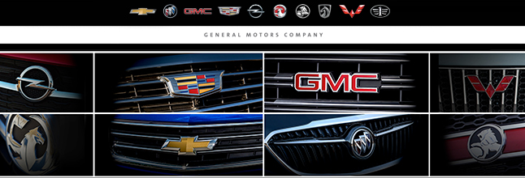

<!DOCTYPE html>
<html lang="en">

<head>
    <meta charset="UTF-8">
    <meta name="viewport" content="width=device-width, initial-scale=1.0">
    <meta http-equiv="X-UA-Compatible" content="ie=edge">
    <title>Homework #6</title>
</head>

<body>
    <!-- <a href="https://www.lamborghini.com/sites/it-en/files/DAM/lamborghini/share%20img/huracan-coupe-facebook-og.jpg" target="_blank" download="huracan-coupe-facebook-og.jpg">Lamborghini Hurracan</a> -->
    <!-- <abbr title="Azerbaijan State Oil Academy">ASOA</abbr> -->

    <!-- <address>
        <a href="mailto:o.ismayilov@collezioneitalia.az">Orkhan Ismayilov</a><br>
        Procurement Manager <br>
        <br>
        Hasan Aliyev, 139a <br>
        AZ1110, Baku <br>
        Azerbaijan
    </address> -->

    <!-- 

    <map name="brandsmap">
        <area shape="rect" coords="0,65,115,140" href="img/brandsmap/opel_logo.png" alt="Opel">
        <area shape="rect" coords="115,65,323,140" href="img/brandsmap/cadillac_logo.jpg" alt="Cadillac">
        <area shape="rect" coords="325,65,527,140" href="img/brandsmap/gmc_logo.jpg" alt="GMC">
        <area shape="rect" coords="530,65,645,140" href="img/brandsmap/wuling_logo.jpg" alt="Wuling">
        <area shape="rect" coords="0,140,115,218" href="img/brandsmap/vauxhall_logo.jpg" alt="Vauxhall">
        <area shape="rect" coords="115,140,323,218" href="img/brandsmap/chevrolet_logo.jpg" alt="Chevrolet">
        <area shape="rect" coords="325,140,527,218" href="img/brandsmap/buick_logo.jpg" alt="Buick">
        <area shape="rect" coords="530,140,645,218" href="img/brandsmap/holden_logo.jpg" alt="Holden">
    </map> -->

    <!-- <audio controls>
        <source src="audio/alarm.mp3" type="audio/mpeg">
    </audio> -->

    <!-- <p>Shitman is a <b>SHIT</b></p> -->

    <!-- <bdo dir="rtl">
        Right to left.
    </bdo> -->

    <!-- <blockquote cite="https://www.investopedia.com/articles/investing/052815/when-why-should-company-use-lifo.asp?ad=dirN&qo=investopediaSiteSearch&qsrc=0&o=40186">
        Under LIFO, a business records its newest products and inventory as the first sold. The opposite approach is called FIFO,
        which stands for first-in, first out. Under FIFO, the oldest inventory is recorded as the first sold. In either case,
        the business may not be literally selling the newest or oldest inventory, but it is using that assumption for cost
        accounting purposes. If the cost of buying inventory were the same every year, it would make no difference whether
        a business used LIFO or FIFO. But costs do change. For many products, costs rise every year. Businesses that sell
        those products benefit from using LIFO. 
    </blockquote> -->
</body>

</html>